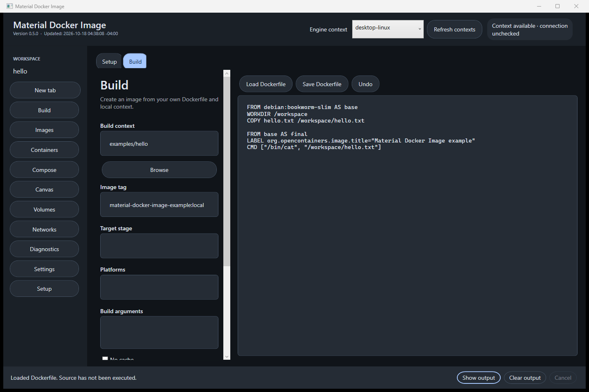
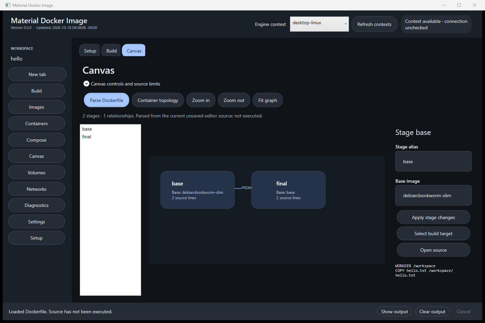
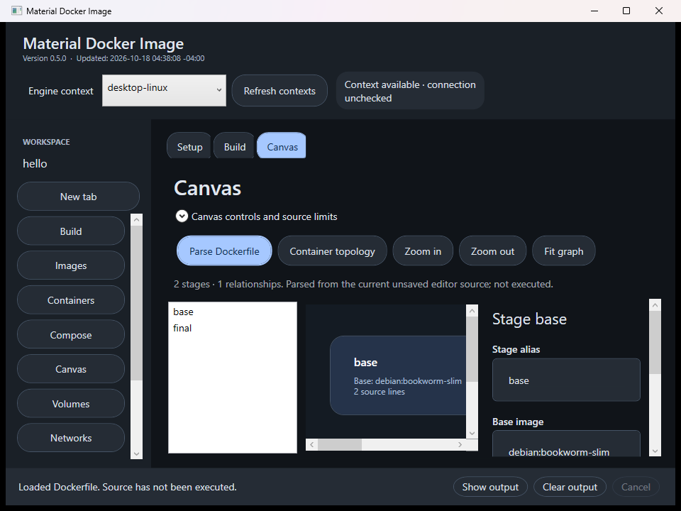

User guides
Complete source: docs/features/README.md
User guides
• Canvas
• Feature completion checklist
The application uses the local Docker CLI. It exposes no HTTP API, so a Postman collection is not applicable.
Configure a build, inspect its result, and run it with deliberate ports, mounts and resource limits. Start with the task you need.
Development in progress · Release verification pendingRunning application version and release timestamp: unavailable. This documentation does not claim a verified release.
Maintainer-owned status, backed by the checked-in inventory. Implemented does not mean fully verified. This is separate from your preparation checklist below.
123 entries: 109 required capabilities, 10 product workflows and 4 milestones. 0 fully verified.
No entries match these filters. Reset the filters to see all entries.
accessibility-sizingComplete acceptance has not been established for this required capability.
Confirm implementation, documentation, localization, persistence where applicable, focused regression checks and source-bound interaction evidence for accessibility-sizing.
adhd-modesComplete acceptance has not been established for this required capability.
Confirm implementation, documentation, localization, persistence where applicable, focused regression checks and source-bound interaction evidence for adhd-modes.
private-conversation-disciplineComplete acceptance has not been established for this required capability.
Confirm implementation, documentation, localization, persistence where applicable, focused regression checks and source-bound interaction evidence for private-conversation-discipline.
app-iconComplete acceptance has not been established for this required capability.
Confirm implementation, documentation, localization, persistence where applicable, focused regression checks and source-bound interaction evidence for app-icon.
appearance-editorComplete acceptance has not been established for this required capability.
Confirm implementation, documentation, localization, persistence where applicable, focused regression checks and source-bound interaction evidence for appearance-editor.
authenticatorComplete acceptance has not been established for this required capability.
Confirm implementation, documentation, localization, persistence where applicable, focused regression checks and source-bound interaction evidence for authenticator.
auto-updatesComplete acceptance has not been established for this required capability.
Confirm implementation, documentation, localization, persistence where applicable, focused regression checks and source-bound interaction evidence for auto-updates.
blank-editorsComplete acceptance has not been established for this required capability.
Confirm implementation, documentation, localization, persistence where applicable, focused regression checks and source-bound interaction evidence for blank-editors.
build-entrypointsComplete acceptance has not been established for this required capability.
Confirm implementation, documentation, localization, persistence where applicable, focused regression checks and source-bound interaction evidence for build-entrypoints.
bulk-actionsComplete acceptance has not been established for this required capability.
Confirm implementation, documentation, localization, persistence where applicable, focused regression checks and source-bound interaction evidence for bulk-actions.
bundled-dependenciesComplete acceptance has not been established for this required capability.
Confirm implementation, documentation, localization, persistence where applicable, focused regression checks and source-bound interaction evidence for bundled-dependencies.
changelogComplete acceptance has not been established for this required capability.
Confirm implementation, documentation, localization, persistence where applicable, focused regression checks and source-bound interaction evidence for changelog.
layout-overflow-matrixComplete acceptance has not been established for this required capability.
Confirm implementation, documentation, localization, persistence where applicable, focused regression checks and source-bound interaction evidence for layout-overflow-matrix.
ci-bootstrapComplete acceptance has not been established for this required capability.
Confirm implementation, documentation, localization, persistence where applicable, focused regression checks and source-bound interaction evidence for ci-bootstrap.
closeout-promptComplete acceptance has not been established for this required capability.
Confirm implementation, documentation, localization, persistence where applicable, focused regression checks and source-bound interaction evidence for closeout-prompt.
collapse-filtersComplete acceptance has not been established for this required capability.
Confirm implementation, documentation, localization, persistence where applicable, focused regression checks and source-bound interaction evidence for collapse-filters.
color-pickerComplete acceptance has not been established for this required capability.
Confirm implementation, documentation, localization, persistence where applicable, focused regression checks and source-bound interaction evidence for color-picker.
command-paletteComplete acceptance has not been established for this required capability.
Confirm implementation, documentation, localization, persistence where applicable, focused regression checks and source-bound interaction evidence for command-palette.
completeness-parityComplete acceptance has not been established for this required capability.
Confirm implementation, documentation, localization, persistence where applicable, focused regression checks and source-bound interaction evidence for completeness-parity.
context-menusComplete acceptance has not been established for this required capability.
Confirm implementation, documentation, localization, persistence where applicable, focused regression checks and source-bound interaction evidence for context-menus.
mobile-websiteComplete acceptance has not been established for this required capability.
Confirm implementation, documentation, localization, persistence where applicable, focused regression checks and source-bound interaction evidence for mobile-website.
dependency-fetcherComplete acceptance has not been established for this required capability.
Confirm implementation, documentation, localization, persistence where applicable, focused regression checks and source-bound interaction evidence for dependency-fetcher.
design-folderComplete acceptance has not been established for this required capability.
Confirm implementation, documentation, localization, persistence where applicable, focused regression checks and source-bound interaction evidence for design-folder.
design-reference-parityComplete acceptance has not been established for this required capability.
Confirm implementation, documentation, localization, persistence where applicable, focused regression checks and source-bound interaction evidence for design-reference-parity.
dim-sumComplete acceptance has not been established for this required capability.
Confirm implementation, documentation, localization, persistence where applicable, focused regression checks and source-bound interaction evidence for dim-sum.
dim-sum-code-namesComplete acceptance has not been established for this required capability.
Confirm implementation, documentation, localization, persistence where applicable, focused regression checks and source-bound interaction evidence for dim-sum-code-names.
dim-sum-photo-sourceComplete acceptance has not been established for this required capability.
Confirm implementation, documentation, localization, persistence where applicable, focused regression checks and source-bound interaction evidence for dim-sum-photo-source.
discord-status-bridgeComplete acceptance has not been established for this required capability.
Confirm implementation, documentation, localization, persistence where applicable, focused regression checks and source-bound interaction evidence for discord-status-bridge.
discussion-recordsComplete acceptance has not been established for this required capability.
Confirm implementation, documentation, localization, persistence where applicable, focused regression checks and source-bound interaction evidence for discussion-records.
display-nameComplete acceptance has not been established for this required capability.
Confirm implementation, documentation, localization, persistence where applicable, focused regression checks and source-bound interaction evidence for display-name.
download-handoffComplete acceptance has not been established for this required capability.
Confirm implementation, documentation, localization, persistence where applicable, focused regression checks and source-bound interaction evidence for download-handoff.
element-locksComplete acceptance has not been established for this required capability.
Confirm implementation, documentation, localization, persistence where applicable, focused regression checks and source-bound interaction evidence for element-locks.
encrypted-public-builderComplete acceptance has not been established for this required capability.
Confirm implementation, documentation, localization, persistence where applicable, focused regression checks and source-bound interaction evidence for encrypted-public-builder.
exportsComplete acceptance has not been established for this required capability.
Confirm implementation, documentation, localization, persistence where applicable, focused regression checks and source-bound interaction evidence for exports.
external-editorComplete acceptance has not been established for this required capability.
Confirm implementation, documentation, localization, persistence where applicable, focused regression checks and source-bound interaction evidence for external-editor.
feature-articlesComplete acceptance has not been established for this required capability.
Confirm implementation, documentation, localization, persistence where applicable, focused regression checks and source-bound interaction evidence for feature-articles.
feature-docsComplete acceptance has not been established for this required capability.
Confirm implementation, documentation, localization, persistence where applicable, focused regression checks and source-bound interaction evidence for feature-docs.
file-converterComplete acceptance has not been established for this required capability.
Confirm implementation, documentation, localization, persistence where applicable, focused regression checks and source-bound interaction evidence for file-converter.
forge-publishingComplete acceptance has not been established for this required capability.
Confirm implementation, documentation, localization, persistence where applicable, focused regression checks and source-bound interaction evidence for forge-publishing.
fresh-build-run-commandComplete acceptance has not been established for this required capability.
Confirm implementation, documentation, localization, persistence where applicable, focused regression checks and source-bound interaction evidence for fresh-build-run-command.
front-provenanceComplete acceptance has not been established for this required capability.
Confirm implementation, documentation, localization, persistence where applicable, focused regression checks and source-bound interaction evidence for front-provenance.
functional-uiComplete acceptance has not been established for this required capability.
Confirm implementation, documentation, localization, persistence where applicable, focused regression checks and source-bound interaction evidence for functional-ui.
funny-emojiComplete acceptance has not been established for this required capability.
Confirm implementation, documentation, localization, persistence where applicable, focused regression checks and source-bound interaction evidence for funny-emoji.
guided-formsComplete acceptance has not been established for this required capability.
Confirm implementation, documentation, localization, persistence where applicable, focused regression checks and source-bound interaction evidence for guided-forms.
handoff-recordComplete acceptance has not been established for this required capability.
Confirm implementation, documentation, localization, persistence where applicable, focused regression checks and source-bound interaction evidence for handoff-record.
homepage-linkComplete acceptance has not been established for this required capability.
Confirm implementation, documentation, localization, persistence where applicable, focused regression checks and source-bound interaction evidence for homepage-link.
honest-monetizationComplete acceptance has not been established for this required capability.
Confirm implementation, documentation, localization, persistence where applicable, focused regression checks and source-bound interaction evidence for honest-monetization.
human-time-estimateComplete acceptance has not been established for this required capability.
Confirm implementation, documentation, localization, persistence where applicable, focused regression checks and source-bound interaction evidence for human-time-estimate.
info-icon-guidanceComplete acceptance has not been established for this required capability.
Confirm implementation, documentation, localization, persistence where applicable, focused regression checks and source-bound interaction evidence for info-icon-guidance.
installer-download-buttonComplete acceptance has not been established for this required capability.
Confirm implementation, documentation, localization, persistence where applicable, focused regression checks and source-bound interaction evidence for installer-download-button.
landing-siteComplete acceptance has not been established for this required capability.
Confirm implementation, documentation, localization, persistence where applicable, focused regression checks and source-bound interaction evidence for landing-site.
languageComplete acceptance has not been established for this required capability.
Confirm implementation, documentation, localization, persistence where applicable, focused regression checks and source-bound interaction evidence for language.
local-historyComplete acceptance has not been established for this required capability.
Confirm implementation, documentation, localization, persistence where applicable, focused regression checks and source-bound interaction evidence for local-history.
logo-customizationComplete acceptance has not been established for this required capability.
Confirm implementation, documentation, localization, persistence where applicable, focused regression checks and source-bound interaction evidence for logo-customization.
material-designComplete acceptance has not been established for this required capability.
Confirm implementation, documentation, localization, persistence where applicable, focused regression checks and source-bound interaction evidence for material-design.
menu-shortcutsComplete acceptance has not been established for this required capability.
Confirm implementation, documentation, localization, persistence where applicable, focused regression checks and source-bound interaction evidence for menu-shortcuts.
minecraft-server-managerComplete acceptance has not been established for this required capability.
Confirm implementation, documentation, localization, persistence where applicable, focused regression checks and source-bound interaction evidence for minecraft-server-manager.
motionComplete acceptance has not been established for this required capability.
Confirm implementation, documentation, localization, persistence where applicable, focused regression checks and source-bound interaction evidence for motion.
narrationComplete acceptance has not been established for this required capability.
Confirm implementation, documentation, localization, persistence where applicable, focused regression checks and source-bound interaction evidence for narration.
notificationsComplete acceptance has not been established for this required capability.
Confirm implementation, documentation, localization, persistence where applicable, focused regression checks and source-bound interaction evidence for notifications.
offline-docsComplete acceptance has not been established for this required capability.
Confirm implementation, documentation, localization, persistence where applicable, focused regression checks and source-bound interaction evidence for offline-docs.
ollama-suiteComplete acceptance has not been established for this required capability.
Confirm implementation, documentation, localization, persistence where applicable, focused regression checks and source-bound interaction evidence for ollama-suite.
onboarding-wizardComplete acceptance has not been established for this required capability.
Confirm implementation, documentation, localization, persistence where applicable, focused regression checks and source-bound interaction evidence for onboarding-wizard.
operational-skillComplete acceptance has not been established for this required capability.
Confirm implementation, documentation, localization, persistence where applicable, focused regression checks and source-bound interaction evidence for operational-skill.
overlay-panelsComplete acceptance has not been established for this required capability.
Confirm implementation, documentation, localization, persistence where applicable, focused regression checks and source-bound interaction evidence for overlay-panels.
panic-webhooksComplete acceptance has not been established for this required capability.
Confirm implementation, documentation, localization, persistence where applicable, focused regression checks and source-bound interaction evidence for panic-webhooks.
personal-vocabularyComplete acceptance has not been established for this required capability.
Confirm implementation, documentation, localization, persistence where applicable, focused regression checks and source-bound interaction evidence for personal-vocabulary.
postman-collectionsComplete acceptance has not been established for this required capability.
Confirm implementation, documentation, localization, persistence where applicable, focused regression checks and source-bound interaction evidence for postman-collections.
offline-documentation-companionComplete acceptance has not been established for this required capability.
Confirm implementation, documentation, localization, persistence where applicable, focused regression checks and source-bound interaction evidence for offline-documentation-companion.
product-evidenceComplete acceptance has not been established for this required capability.
Confirm implementation, documentation, localization, persistence where applicable, focused regression checks and source-bound interaction evidence for product-evidence.
progress-recoveryComplete acceptance has not been established for this required capability.
Confirm implementation, documentation, localization, persistence where applicable, focused regression checks and source-bound interaction evidence for progress-recovery.
project-boardComplete acceptance has not been established for this required capability.
Confirm implementation, documentation, localization, persistence where applicable, focused regression checks and source-bound interaction evidence for project-board.
project-profileComplete acceptance has not been established for this required capability.
Confirm implementation, documentation, localization, persistence where applicable, focused regression checks and source-bound interaction evidence for project-profile.
public-screenshot-galleryComplete acceptance has not been established for this required capability.
Confirm implementation, documentation, localization, persistence where applicable, focused regression checks and source-bound interaction evidence for public-screenshot-gallery.
qr-pairingComplete acceptance has not been established for this required capability.
Confirm implementation, documentation, localization, persistence where applicable, focused regression checks and source-bound interaction evidence for qr-pairing.
readme-prompt-bannerComplete acceptance has not been established for this required capability.
Confirm implementation, documentation, localization, persistence where applicable, focused regression checks and source-bound interaction evidence for readme-prompt-banner.
regex-searchComplete acceptance has not been established for this required capability.
Confirm implementation, documentation, localization, persistence where applicable, focused regression checks and source-bound interaction evidence for regex-search.
release-dim-sum-photoComplete acceptance has not been established for this required capability.
Confirm implementation, documentation, localization, persistence where applicable, focused regression checks and source-bound interaction evidence for release-dim-sum-photo.
release-line-countsComplete acceptance has not been established for this required capability.
Confirm implementation, documentation, localization, persistence where applicable, focused regression checks and source-bound interaction evidence for release-line-counts.
release-timingComplete acceptance has not been established for this required capability.
Confirm implementation, documentation, localization, persistence where applicable, focused regression checks and source-bound interaction evidence for release-timing.
release-workflowComplete acceptance has not been established for this required capability.
Confirm implementation, documentation, localization, persistence where applicable, focused regression checks and source-bound interaction evidence for release-workflow.
rendered-provider-textComplete acceptance has not been established for this required capability.
Confirm implementation, documentation, localization, persistence where applicable, focused regression checks and source-bound interaction evidence for rendered-provider-text.
rich-controlsComplete acceptance has not been established for this required capability.
Confirm implementation, documentation, localization, persistence where applicable, focused regression checks and source-bound interaction evidence for rich-controls.
roadmap-checklistComplete acceptance has not been established for this required capability.
Confirm implementation, documentation, localization, persistence where applicable, focused regression checks and source-bound interaction evidence for roadmap-checklist.
roblox-model-catalogueComplete acceptance has not been established for this required capability.
Confirm implementation, documentation, localization, persistence where applicable, focused regression checks and source-bound interaction evidence for roblox-model-catalogue.
roblox-visual-realismComplete acceptance has not been established for this required capability.
Confirm implementation, documentation, localization, persistence where applicable, focused regression checks and source-bound interaction evidence for roblox-visual-realism.
runner-selectionComplete acceptance has not been established for this required capability.
Confirm implementation, documentation, localization, persistence where applicable, focused regression checks and source-bound interaction evidence for runner-selection.
sanitized-instruction-copyComplete acceptance has not been established for this required capability.
Confirm implementation, documentation, localization, persistence where applicable, focused regression checks and source-bound interaction evidence for sanitized-instruction-copy.
scheduled-settingsComplete acceptance has not been established for this required capability.
Confirm implementation, documentation, localization, persistence where applicable, focused regression checks and source-bound interaction evidence for scheduled-settings.
school-modeComplete acceptance has not been established for this required capability.
Confirm implementation, documentation, localization, persistence where applicable, focused regression checks and source-bound interaction evidence for school-mode.
screen-recordingComplete acceptance has not been established for this required capability.
Confirm implementation, documentation, localization, persistence where applicable, focused regression checks and source-bound interaction evidence for screen-recording.
self-signingComplete acceptance has not been established for this required capability.
Confirm implementation, documentation, localization, persistence where applicable, focused regression checks and source-bound interaction evidence for self-signing.
settings-explanationsComplete acceptance has not been established for this required capability.
Confirm implementation, documentation, localization, persistence where applicable, focused regression checks and source-bound interaction evidence for settings-explanations.
shared-link-embedComplete acceptance has not been established for this required capability.
Confirm implementation, documentation, localization, persistence where applicable, focused regression checks and source-bound interaction evidence for shared-link-embed.
squirrel-installerComplete acceptance has not been established for this required capability.
Confirm implementation, documentation, localization, persistence where applicable, focused regression checks and source-bound interaction evidence for squirrel-installer.
status-hubComplete acceptance has not been established for this required capability.
Confirm implementation, documentation, localization, persistence where applicable, focused regression checks and source-bound interaction evidence for status-hub.
super-confirmationComplete acceptance has not been established for this required capability.
Confirm implementation, documentation, localization, persistence where applicable, focused regression checks and source-bound interaction evidence for super-confirmation.
support-ticketsComplete acceptance has not been established for this required capability.
Confirm implementation, documentation, localization, persistence where applicable, focused regression checks and source-bound interaction evidence for support-tickets.
tabbed-readmeComplete acceptance has not been established for this required capability.
Confirm implementation, documentation, localization, persistence where applicable, focused regression checks and source-bound interaction evidence for tabbed-readme.
tabsComplete acceptance has not been established for this required capability.
Confirm implementation, documentation, localization, persistence where applicable, focused regression checks and source-bound interaction evidence for tabs.
tidbyt-displaysComplete acceptance has not been established for this required capability.
Confirm implementation, documentation, localization, persistence where applicable, focused regression checks and source-bound interaction evidence for tidbyt-displays.
shared-instruction-portable-editionsComplete acceptance has not been established for this required capability.
Confirm implementation, documentation, localization, persistence where applicable, focused regression checks and source-bound interaction evidence for shared-instruction-portable-editions.
unlock-ladderComplete acceptance has not been established for this required capability.
Confirm implementation, documentation, localization, persistence where applicable, focused regression checks and source-bound interaction evidence for unlock-ladder.
vendored-fontsComplete acceptance has not been established for this required capability.
Confirm implementation, documentation, localization, persistence where applicable, focused regression checks and source-bound interaction evidence for vendored-fonts.
vocabulary-drop-applyComplete acceptance has not been established for this required capability.
Confirm implementation, documentation, localization, persistence where applicable, focused regression checks and source-bound interaction evidence for vocabulary-drop-apply.
vocabulary-hash-lockComplete acceptance has not been established for this required capability.
Confirm implementation, documentation, localization, persistence where applicable, focused regression checks and source-bound interaction evidence for vocabulary-hash-lock.
vocabulary-unlock-boundaryComplete acceptance has not been established for this required capability.
Confirm implementation, documentation, localization, persistence where applicable, focused regression checks and source-bound interaction evidence for vocabulary-unlock-boundary.
wiki-documentation-syncComplete acceptance has not been established for this required capability.
Confirm implementation, documentation, localization, persistence where applicable, focused regression checks and source-bound interaction evidence for wiki-documentation-sync.
workflow-navigationComplete acceptance has not been established for this required capability.
Confirm implementation, documentation, localization, persistence where applicable, focused regression checks and source-bound interaction evidence for workflow-navigation.
workflow-structured-execution23 core checks passed for argument separation, output bounds, cancellation and parsing.
Complete the remaining workflow combinations and independent acceptance described in the source reference. Existing bounded evidence does not establish full verification.
workflow-build-workspaceMultiple tags, labels, target/platform selection, local load, registry push, OCI archive, cache import/export and secret-file rows implemented. Real native build at f370d66 verified exact label whitespace. OCI/cache/secret and registry runtime combinations are not all exercised.
Complete the remaining workflow combinations and independent acceptance described in the source reference. Existing bounded evidence does not establish full verification.
workflow-run-editorExplicit JSON argv, non-secret environment, entrypoint/user/workdir, CPU/memory, restart policy and additional port/mount rows implemented. Real native run at f370d66 verified exact environment whitespace. GPU, devices, health-check configuration and interactive terminals remain gaps.
Complete the remaining workflow combinations and independent acceptance described in the source reference. Existing bounded evidence does not establish full verification.
workflow-native-canvasStage graph/object selection, inspector, supported alias/base edits, target selection, source navigation, zoom/pan/fit and inspected runtime memberships implemented. 51 UI-state/parser checks passed. Graph rendering is not proof of every interaction or Dockerfile construct.
Complete the remaining workflow combinations and independent acceptance described in the source reference. Existing bounded evidence does not establish full verification.
workflow-resource-managementImage/container/volume/network operations and loaded Compose save-path/context protection implemented. Complete workflow acceptance remains open.
Complete the remaining workflow combinations and independent acceptance described in the source reference. Existing bounded evidence does not establish full verification.
workflow-restart-restorationSource 3ce1ed7 local 0.5.0 build/installer production and actual restart restoration passed, preserving the absolute example folder and exact source after line-ending normalization. Included in verified normal v0.5.1 at ad5d3ac. Original capture provenance remains 3ce1ed7/0.5.0.
Complete the remaining workflow combinations and independent acceptance described in the source reference. Existing bounded evidence does not establish full verification.
workflow-package-releaseNormal v0.5.1 at ad5d3ac5c02588e8efcc926715119b87a9c7c6d5 was verified through successful run 39112649034, exact tag source and five asset sizes/digests.
Complete the remaining workflow combinations and independent acceptance described in the source reference. Existing bounded evidence does not establish full verification.
workflow-installed-setupExisting installation updated through Update.exe to 0.5.1.0; executable matched the published package and settings were preserved. Installed hidden launch detected Docker, exercised Setup Back/Next/Finish, persisted completion at step 2 and displayed productive Build. Fresh install, update-ready banner, cancellation and uninstall acceptance remain open.
Complete the remaining workflow combinations and independent acceptance described in the source reference. Existing bounded evidence does not establish full verification.
workflow-native-capturesEnglish, dark, 100% scaling at normal/minimum sizes only. README captures are retained and inspected for 3ce1ed7 local 0.5.0: Build 1440x960, populated Canvas 1440x960 and 960x720. Minimum graph panning and inspector scrolling are intentional. Full matrix is incomplete.
Complete the remaining workflow combinations and independent acceptance described in the source reference. Existing bounded evidence does not establish full verification.
workflow-documentation-companionsDeployment 39112649029 for ad5d3ac delivered 12 articles, 109 neutral identifiers and three byte-identical PNGs. 1440/320 widths had no horizontal overflow; guide/checklist/theme/bilingual persistence and exact About homepage passed. Complete documentation/wiki acceptance and portable documentation/build companions remain incomplete.
Complete the remaining workflow combinations and independent acceptance described in the source reference. Existing bounded evidence does not establish full verification.
feature-checklistSource-controlled status, filters, bilingual details and generated summaries are implemented. Twelve browser width/language/theme tuples, keyboard disclosure and preparation persistence passed at the recorded candidate.
Complete the capture-promotion and cleanup receipt. Isolated profile removal was rejected, so captures remain retained privately. Verify each later deployment separately; full accessibility and higher physical scales remain outside the bounded evidence.
container-health-checksHealth-check configuration is planned; existing container creation does not establish service health.
Implement tailored controls, validation, documentation and focused checks, then verify with a supported real engine.
container-device-mappingsHost device mapping controls and runtime acceptance are planned.
Implement tailored controls, validation, documentation and focused checks, then verify with a supported real engine.
container-gpu-accessGPU access controls and supported-host runtime acceptance are planned.
Implement tailored controls, validation, documentation and focused checks, then verify with a supported real engine.
Guide only. These steps do not control or execute the installed application.
Interactive demonstration. Nothing is executed, built, downloaded or published.
The demonstration uses a fixed relative context and no credentials.
The articles below include the complete checked-in guide text. Source links are optional reference links.
Supports literal text, ., ^, $ and simple character classes. Maximum 120 characters. Repetition, groups, alternation and escapes are unsupported. This bounded local builder is not full RegexBuddy parity.
只支援文字、單字元、開頭結尾同簡單字元集合。未達完整 RegexBuddy 功能。
Complete source: docs/features/README.md
• Canvas
• Feature completion checklist
The application uses the local Docker CLI. It exposes no HTTP API, so a Postman collection is not applicable.
Complete source: docs/features/advanced-build.md
The Build workspace keeps the Dockerfile editor beside the selected local context. Advanced controls expand in place and use structured Docker CLI arguments.
• Load into local engine is the default. This editor accepts one platform for a local load.
• Push to registry accepts multiple tags and platforms and requires confirmation naming the destination tags. Docker retains ownership of registry authentication.
• Export OCI archive writes to a selected local archive path. The parent directory must exist, and replacing an existing archive requires confirmation. Exporter availability depends on the installed builder.
The Image tag field accepts comma-separated or line-separated tags. Labels use one key=value per line. Label keys support namespace punctuation; values retain spaces exactly. The application does not shell-interpret values.
Cache import and export accept one BuildKit specification per line, such as type=local,src=C:/cache or type=registry,ref=registry.example/team/cache. The installed builder decides which backends it supports. Export is a write operation and requires confirmation. Do not place credentials in these fields.
Add a secret row, choose an existing local file, and enter the identifier used by the Dockerfile's RUN --mount=type=secret instruction. The application passes the selected path to BuildKit without reading or persisting the file's contents. Selections remain in the current window only. The Dockerfile itself must avoid printing secrets or copying them into an image.
Check Dockerfile with BuildKit invokes the installed builder's actual --check route against the saved Dockerfile. Unsupported builder versions report their real error. A check is distinct from a successful build, image load, registry publication or container health result.
Input validation has focused regression coverage. Successful local builds have been exercised separately from remote registry, cache-backend and multi-architecture acceptance. Those latter paths remain capability-dependent and are not inferred from a local build.
建置頁可以揀載入本機引擎、發布去登錄服務，或者匯出 OCI 封存檔。發布同覆寫都會清楚確認目的地。標籤值保留原本空格，唔經主機命令殼層。快取支援程度由實際建置器決定。秘密檔案只傳路徑畀 BuildKit，介面唔讀取內容；Dockerfile 本身亦唔可以印出或者複製秘密。檢查通過唔等於建置、發布或者服務健康已經通過。
Complete source: docs/features/build-and-run.md
Choose a context folder and Dockerfile in the Build workspace. Review the document before running it: Dockerfile instructions can execute commands in the selected build environment. Choose an image tag, optional target stage, platform, build arguments, and cache behavior. The selected Docker context applies to each command without changing the user's global selection.
Start the build and inspect the streamed output. A successful exit reports command completion; inspect the resulting image before treating a mutable tag as a particular immutable result. Cancellation terminates the local CLI process, and engine-side state must be refreshed before retrying.
Choose an image, configure the container name, ports, environment, mounts, network, restart behavior, and resource limits exposed by the Run editor. Review writable host mounts carefully. Start the container, then inspect its state and logs. A created container is not necessarily a healthy service.
Open a Compose file, review or edit it, and validate the resolved configuration before starting services. Down removes the project's service containers. Persistent volume deletion must be a separate explicit choice.
An unavailable engine, missing build context, invalid tag, unsupported platform, or failing build step produces a real unsuccessful result. Correct the reported cause, refresh engine state, and retry. Keep protected values out of build arguments and use Docker-supported secret routes when available.
先揀內容資料夾同 Dockerfile，再檢查標籤、目標階段、平台同快取設定。建置時睇實輸出，成功退出唔等於服務健康。停止本機指令之後，要重新整理引擎狀態先再試。Compose 啟動前先驗證設定，刪除持久資料必須另外明確選擇。
Complete source: docs/features/canvas.md
The Canvas workspace provides a visual view of Dockerfile stages and runtime container relationships. Pan and zoom to inspect larger graphs, select a node to see its details, and return to the source editor for syntax that the current parser cannot safely round-trip.
Stage edges represent parsed dependencies such as FROM and COPY --from. A dependency graph is an explanation of configuration, not proof that a build has run. Runtime nodes come from a refreshed engine inventory and may become stale when an external tool changes containers or networks.
The editor must preserve unsupported instructions. A partial parser must not silently rewrite a complete Dockerfile or invent a dependency for an unresolved expression. Save only intentional changes and review the resulting text.
Implementation and built interaction evidence are tracked separately in the capability inventory. Graph rendering alone does not prove drag, zoom, editing, or synchronization behavior.
畫布顯示建置階段同容器關係。可以移動畫面、縮放同揀節點睇詳情。連線表示設定入面嘅關係，唔代表建置已經執行。未能安全轉換嘅 Dockerfile 語法要保留，唔可以因為畫面靚就偷偷改走。
Complete source: docs/features/capability-inventory.md
Implemented controls, focused checks, real native execution and complete acceptance are separate states. The productive application is native WPF. All 109 required identifiers below remain retained. No row claims complete acceptance from a partial workflow.
| Workflow | Implemented behavior and bounded evidence |
| --- | --- |
| Structured Docker execution | 23 core checks passed for argument separation, output bounds, cancellation and parsing. |
| Build workspace | Multiple tags, labels, target/platform selection, local load, registry push, OCI archive, cache import/export and secret-file rows implemented. Real native build at f370d66 verified exact label whitespace. OCI/cache/secret and registry runtime combinations are not all exercised. |
| Run editor | Explicit JSON argv, non-secret environment, entrypoint/user/workdir, CPU/memory, restart policy and additional port/mount rows implemented. Real native run at f370d66 verified exact environment whitespace. GPU, devices, health-check configuration and interactive terminals remain gaps. |
| Native Canvas | Stage graph/object selection, inspector, supported alias/base edits, target selection, source navigation, zoom/pan/fit and inspected runtime memberships implemented. 51 UI-state/parser checks passed. Graph rendering is not proof of every interaction or Dockerfile construct. |
| Images, resources and Compose | Image/container/volume/network operations and loaded Compose save-path/context protection implemented. Complete workflow acceptance remains open. |
| Restart restoration | Source 3ce1ed7 local 0.5.0 build/installer production and actual restart restoration passed, preserving the absolute example folder and exact source after line-ending normalization. Included in verified normal v0.5.1 at ad5d3ac. Original capture provenance remains 3ce1ed7/0.5.0. |
| Package and release | Normal v0.5.1 at ad5d3ac5c02588e8efcc926715119b87a9c7c6d5 was verified through successful run 39112649034, exact tag source and five asset sizes/digests. |
| Installed update and setup | Existing installation updated through Update.exe to 0.5.1.0; executable matched the published package and settings were preserved. Installed hidden launch detected Docker, exercised Setup Back/Next/Finish, persisted completion at step 2 and displayed productive Build. Fresh install, update-ready banner, cancellation and uninstall acceptance remain open. |
| Current native captures | English, dark, 100% scaling at normal/minimum sizes only. README captures are retained and inspected for 3ce1ed7 local 0.5.0: Build 1440x960, populated Canvas 1440x960 and 960x720. Minimum graph panning and inspector scrolling are intentional. Full matrix is incomplete. |
| Documentation and companions | Deployment 39112649029 for ad5d3ac delivered 12 articles, 109 neutral identifiers and three byte-identical PNGs. 1440/320 widths had no horizontal overflow; guide/checklist/theme/bilingual persistence and exact About homepage passed. Complete documentation/wiki acceptance and portable documentation/build companions remain incomplete. |
<!-- Generated from website/feature-inventory.json by website/render.mjs. -->
123 entries retain 109 required identifiers, 10 product workflows and 4 milestones. Fully verified: 0. Implemented with verification pending: 11. Planned: 3. Unverified: 109.
| Identifier | Capability | Status | Remaining actions |
| --- | --- | --- | --- |
| accessibility-sizing | Accessibility Sizing | Unverified | Confirm implementation, documentation, localization, persistence where applicable, focused regression checks and source-bound interaction evidence for accessibility-sizing. |
| adhd-modes | Adhd Modes | Unverified | Confirm implementation, documentation, localization, persistence where applicable, focused regression checks and source-bound interaction evidence for adhd-modes. |
| app-icon | App Icon | Unverified | Confirm implementation, documentation, localization, persistence where applicable, focused regression checks and source-bound interaction evidence for app-icon. |
| appearance-editor | Appearance Editor | Unverified | Confirm implementation, documentation, localization, persistence where applicable, focused regression checks and source-bound interaction evidence for appearance-editor. |
| blank-editors | Blank Editors | Unverified | Confirm implementation, documentation, localization, persistence where applicable, focused regression checks and source-bound interaction evidence for blank-editors. |
| changelog | Changelog | Unverified | Confirm implementation, documentation, localization, persistence where applicable, focused regression checks and source-bound interaction evidence for changelog. |
| layout-overflow-matrix | Layout Overflow Matrix | Unverified | Confirm implementation, documentation, localization, persistence where applicable, focused regression checks and source-bound interaction evidence for layout-overflow-matrix. |
| color-picker | Color Picker | Unverified | Confirm implementation, documentation, localization, persistence where applicable, focused regression checks and source-bound interaction evidence for color-picker. |
| mobile-website | Mobile Website | Unverified | Confirm implementation, documentation, localization, persistence where applicable, focused regression checks and source-bound interaction evidence for mobile-website. |
| dim-sum | Dim Sum | Unverified | Confirm implementation, documentation, localization, persistence where applicable, focused regression checks and source-bound interaction evidence for dim-sum. |
| dim-sum-code-names | Dim Sum Code Names | Unverified | Confirm implementation, documentation, localization, persistence where applicable, focused regression checks and source-bound interaction evidence for dim-sum-code-names. |
| dim-sum-photo-source | Dim Sum Photo Source | Unverified | Confirm implementation, documentation, localization, persistence where applicable, focused regression checks and source-bound interaction evidence for dim-sum-photo-source. |
| display-name | Display Name | Unverified | Confirm implementation, documentation, localization, persistence where applicable, focused regression checks and source-bound interaction evidence for display-name. |
| front-provenance | Front Provenance | Unverified | Confirm implementation, documentation, localization, persistence where applicable, focused regression checks and source-bound interaction evidence for front-provenance. |
| functional-ui | Functional Ui | Unverified | Confirm implementation, documentation, localization, persistence where applicable, focused regression checks and source-bound interaction evidence for functional-ui. |
| funny-emoji | Funny Emoji | Unverified | Confirm implementation, documentation, localization, persistence where applicable, focused regression checks and source-bound interaction evidence for funny-emoji. |
| guided-forms | Guided Forms | Unverified | Confirm implementation, documentation, localization, persistence where applicable, focused regression checks and source-bound interaction evidence for guided-forms. |
| honest-monetization | Honest Monetization | Unverified | Confirm implementation, documentation, localization, persistence where applicable, focused regression checks and source-bound interaction evidence for honest-monetization. |
| human-time-estimate | Human Time Estimate | Unverified | Confirm implementation, documentation, localization, persistence where applicable, focused regression checks and source-bound interaction evidence for human-time-estimate. |
| info-icon-guidance | Info Icon Guidance | Unverified | Confirm implementation, documentation, localization, persistence where applicable, focused regression checks and source-bound interaction evidence for info-icon-guidance. |
| language | Language | Unverified | Confirm implementation, documentation, localization, persistence where applicable, focused regression checks and source-bound interaction evidence for language. |
| logo-customization | Logo Customization | Unverified | Confirm implementation, documentation, localization, persistence where applicable, focused regression checks and source-bound interaction evidence for logo-customization. |
| material-design | Material Design | Unverified | Confirm implementation, documentation, localization, persistence where applicable, focused regression checks and source-bound interaction evidence for material-design. |
| motion | Motion | Unverified | Confirm implementation, documentation, localization, persistence where applicable, focused regression checks and source-bound interaction evidence for motion. |
| narration | Narration | Unverified | Confirm implementation, documentation, localization, persistence where applicable, focused regression checks and source-bound interaction evidence for narration. |
| notifications | Notifications | Unverified | Confirm implementation, documentation, localization, persistence where applicable, focused regression checks and source-bound interaction evidence for notifications. |
| onboarding-wizard | Onboarding Wizard | Unverified | Confirm implementation, documentation, localization, persistence where applicable, focused regression checks and source-bound interaction evidence for onboarding-wizard. |
| operational-skill | Operational Skill | Unverified | Confirm implementation, documentation, localization, persistence where applicable, focused regression checks and source-bound interaction evidence for operational-skill. |
| overlay-panels | Overlay Panels | Unverified | Confirm implementation, documentation, localization, persistence where applicable, focused regression checks and source-bound interaction evidence for overlay-panels. |
| rendered-provider-text | Rendered Provider Text | Unverified | Confirm implementation, documentation, localization, persistence where applicable, focused regression checks and source-bound interaction evidence for rendered-provider-text. |
| rich-controls | Rich Controls | Unverified | Confirm implementation, documentation, localization, persistence where applicable, focused regression checks and source-bound interaction evidence for rich-controls. |
| sanitized-instruction-copy | Sanitized Instruction Copy | Unverified | Confirm implementation, documentation, localization, persistence where applicable, focused regression checks and source-bound interaction evidence for sanitized-instruction-copy. |
| scheduled-settings | Scheduled Settings | Unverified | Confirm implementation, documentation, localization, persistence where applicable, focused regression checks and source-bound interaction evidence for scheduled-settings. |
| screen-recording | Screen Recording | Unverified | Confirm implementation, documentation, localization, persistence where applicable, focused regression checks and source-bound interaction evidence for screen-recording. |
| settings-explanations | Settings Explanations | Unverified | Confirm implementation, documentation, localization, persistence where applicable, focused regression checks and source-bound interaction evidence for settings-explanations. |
| shared-link-embed | Shared Link Embed | Unverified | Confirm implementation, documentation, localization, persistence where applicable, focused regression checks and source-bound interaction evidence for shared-link-embed. |
| support-tickets | Support Tickets | Unverified | Confirm implementation, documentation, localization, persistence where applicable, focused regression checks and source-bound interaction evidence for support-tickets. |
| vendored-fonts | Vendored Fonts | Unverified | Confirm implementation, documentation, localization, persistence where applicable, focused regression checks and source-bound interaction evidence for vendored-fonts. |
| Identifier | Capability | Status | Remaining actions |
| --- | --- | --- | --- |
| bulk-actions | Bulk Actions | Unverified | Confirm implementation, documentation, localization, persistence where applicable, focused regression checks and source-bound interaction evidence for bulk-actions. |
| collapse-filters | Collapse Filters | Unverified | Confirm implementation, documentation, localization, persistence where applicable, focused regression checks and source-bound interaction evidence for collapse-filters. |
| command-palette | Command Palette | Unverified | Confirm implementation, documentation, localization, persistence where applicable, focused regression checks and source-bound interaction evidence for command-palette. |
| context-menus | Context Menus | Unverified | Confirm implementation, documentation, localization, persistence where applicable, focused regression checks and source-bound interaction evidence for context-menus. |
| exports | Exports | Unverified | Confirm implementation, documentation, localization, persistence where applicable, focused regression checks and source-bound interaction evidence for exports. |
| external-editor | External Editor | Unverified | Confirm implementation, documentation, localization, persistence where applicable, focused regression checks and source-bound interaction evidence for external-editor. |
| local-history | Local History | Unverified | Confirm implementation, documentation, localization, persistence where applicable, focused regression checks and source-bound interaction evidence for local-history. |
| menu-shortcuts | Menu Shortcuts | Unverified | Confirm implementation, documentation, localization, persistence where applicable, focused regression checks and source-bound interaction evidence for menu-shortcuts. |
| progress-recovery | Progress Recovery | Unverified | Confirm implementation, documentation, localization, persistence where applicable, focused regression checks and source-bound interaction evidence for progress-recovery. |
| regex-search | Regex Search | Unverified | Confirm implementation, documentation, localization, persistence where applicable, focused regression checks and source-bound interaction evidence for regex-search. |
| tabs | Tabs | Unverified | Confirm implementation, documentation, localization, persistence where applicable, focused regression checks and source-bound interaction evidence for tabs. |
| workflow-navigation | Workflow Navigation | Unverified | Confirm implementation, documentation, localization, persistence where applicable, focused regression checks and source-bound interaction evidence for workflow-navigation. |
| Identifier | Capability | Status | Remaining actions |
| --- | --- | --- | --- |
| private-conversation-discipline | Private Conversation Discipline | Unverified | Confirm implementation, documentation, localization, persistence where applicable, focused regression checks and source-bound interaction evidence for private-conversation-discipline. |
| authenticator | Authenticator | Unverified | Confirm implementation, documentation, localization, persistence where applicable, focused regression checks and source-bound interaction evidence for authenticator. |
| element-locks | Element Locks | Unverified | Confirm implementation, documentation, localization, persistence where applicable, focused regression checks and source-bound interaction evidence for element-locks. |
| personal-vocabulary | Personal Vocabulary | Unverified | Confirm implementation, documentation, localization, persistence where applicable, focused regression checks and source-bound interaction evidence for personal-vocabulary. |
| school-mode | School Mode | Unverified | Confirm implementation, documentation, localization, persistence where applicable, focused regression checks and source-bound interaction evidence for school-mode. |
| self-signing | Self Signing | Unverified | Confirm implementation, documentation, localization, persistence where applicable, focused regression checks and source-bound interaction evidence for self-signing. |
| super-confirmation | Super Confirmation | Unverified | Confirm implementation, documentation, localization, persistence where applicable, focused regression checks and source-bound interaction evidence for super-confirmation. |
| unlock-ladder | Unlock Ladder | Unverified | Confirm implementation, documentation, localization, persistence where applicable, focused regression checks and source-bound interaction evidence for unlock-ladder. |
| vocabulary-drop-apply | Vocabulary Drop Apply | Unverified | Confirm implementation, documentation, localization, persistence where applicable, focused regression checks and source-bound interaction evidence for vocabulary-drop-apply. |
| vocabulary-hash-lock | Vocabulary Hash Lock | Unverified | Confirm implementation, documentation, localization, persistence where applicable, focused regression checks and source-bound interaction evidence for vocabulary-hash-lock. |
| vocabulary-unlock-boundary | Vocabulary Unlock Boundary | Unverified | Confirm implementation, documentation, localization, persistence where applicable, focused regression checks and source-bound interaction evidence for vocabulary-unlock-boundary. |
| Identifier | Capability | Status | Remaining actions |
| --- | --- | --- | --- |
| auto-updates | Auto Updates | Unverified | Confirm implementation, documentation, localization, persistence where applicable, focused regression checks and source-bound interaction evidence for auto-updates. |
| build-entrypoints | Build Entrypoints | Unverified | Confirm implementation, documentation, localization, persistence where applicable, focused regression checks and source-bound interaction evidence for build-entrypoints. |
| bundled-dependencies | Bundled Dependencies | Unverified | Confirm implementation, documentation, localization, persistence where applicable, focused regression checks and source-bound interaction evidence for bundled-dependencies. |
| ci-bootstrap | Ci Bootstrap | Unverified | Confirm implementation, documentation, localization, persistence where applicable, focused regression checks and source-bound interaction evidence for ci-bootstrap. |
| dependency-fetcher | Dependency Fetcher | Unverified | Confirm implementation, documentation, localization, persistence where applicable, focused regression checks and source-bound interaction evidence for dependency-fetcher. |
| download-handoff | Download Handoff | Unverified | Confirm implementation, documentation, localization, persistence where applicable, focused regression checks and source-bound interaction evidence for download-handoff. |
| encrypted-public-builder | Encrypted Public Builder | Unverified | Confirm implementation, documentation, localization, persistence where applicable, focused regression checks and source-bound interaction evidence for encrypted-public-builder. |
| forge-publishing | Forge Publishing | Unverified | Confirm implementation, documentation, localization, persistence where applicable, focused regression checks and source-bound interaction evidence for forge-publishing. |
| fresh-build-run-command | Fresh Build Run Command | Unverified | Confirm implementation, documentation, localization, persistence where applicable, focused regression checks and source-bound interaction evidence for fresh-build-run-command. |
| installer-download-button | Installer Download Button | Unverified | Confirm implementation, documentation, localization, persistence where applicable, focused regression checks and source-bound interaction evidence for installer-download-button. |
| release-dim-sum-photo | Release Dim Sum Photo | Unverified | Confirm implementation, documentation, localization, persistence where applicable, focused regression checks and source-bound interaction evidence for release-dim-sum-photo. |
| release-line-counts | Release Line Counts | Unverified | Confirm implementation, documentation, localization, persistence where applicable, focused regression checks and source-bound interaction evidence for release-line-counts. |
| release-timing | Release Timing | Unverified | Confirm implementation, documentation, localization, persistence where applicable, focused regression checks and source-bound interaction evidence for release-timing. |
| release-workflow | Release Workflow | Unverified | Confirm implementation, documentation, localization, persistence where applicable, focused regression checks and source-bound interaction evidence for release-workflow. |
| runner-selection | Runner Selection | Unverified | Confirm implementation, documentation, localization, persistence where applicable, focused regression checks and source-bound interaction evidence for runner-selection. |
| squirrel-installer | Squirrel Installer | Unverified | Confirm implementation, documentation, localization, persistence where applicable, focused regression checks and source-bound interaction evidence for squirrel-installer. |
| Identifier | Capability | Status | Remaining actions |
| --- | --- | --- | --- |
| closeout-prompt | Closeout Prompt | Unverified | Confirm implementation, documentation, localization, persistence where applicable, focused regression checks and source-bound interaction evidence for closeout-prompt. |
| completeness-parity | Completeness Parity | Unverified | Confirm implementation, documentation, localization, persistence where applicable, focused regression checks and source-bound interaction evidence for completeness-parity. |
| design-folder | Design Folder | Unverified | Confirm implementation, documentation, localization, persistence where applicable, focused regression checks and source-bound interaction evidence for design-folder. |
| design-reference-parity | Design Reference Parity | Unverified | Confirm implementation, documentation, localization, persistence where applicable, focused regression checks and source-bound interaction evidence for design-reference-parity. |
| discussion-records | Discussion Records | Unverified | Confirm implementation, documentation, localization, persistence where applicable, focused regression checks and source-bound interaction evidence for discussion-records. |
| feature-articles | Feature Articles | Unverified | Confirm implementation, documentation, localization, persistence where applicable, focused regression checks and source-bound interaction evidence for feature-articles. |
| feature-docs | Feature Docs | Unverified | Confirm implementation, documentation, localization, persistence where applicable, focused regression checks and source-bound interaction evidence for feature-docs. |
| handoff-record | Handoff Record | Unverified | Confirm implementation, documentation, localization, persistence where applicable, focused regression checks and source-bound interaction evidence for handoff-record. |
| homepage-link | Homepage Link | Unverified | Confirm implementation, documentation, localization, persistence where applicable, focused regression checks and source-bound interaction evidence for homepage-link. |
| landing-site | Landing Site | Unverified | Confirm implementation, documentation, localization, persistence where applicable, focused regression checks and source-bound interaction evidence for landing-site. |
| offline-docs | Offline Docs | Unverified | Confirm implementation, documentation, localization, persistence where applicable, focused regression checks and source-bound interaction evidence for offline-docs. |
| offline-documentation-companion | Offline Documentation Companion | Unverified | Confirm implementation, documentation, localization, persistence where applicable, focused regression checks and source-bound interaction evidence for offline-documentation-companion. |
| product-evidence | Product Evidence | Unverified | Confirm implementation, documentation, localization, persistence where applicable, focused regression checks and source-bound interaction evidence for product-evidence. |
| project-board | Project Board | Unverified | Confirm implementation, documentation, localization, persistence where applicable, focused regression checks and source-bound interaction evidence for project-board. |
| project-profile | Project Profile | Unverified | Confirm implementation, documentation, localization, persistence where applicable, focused regression checks and source-bound interaction evidence for project-profile. |
| public-screenshot-gallery | Public Screenshot Gallery | Unverified | Confirm implementation, documentation, localization, persistence where applicable, focused regression checks and source-bound interaction evidence for public-screenshot-gallery. |
| readme-prompt-banner | Readme Prompt Banner | Unverified | Confirm implementation, documentation, localization, persistence where applicable, focused regression checks and source-bound interaction evidence for readme-prompt-banner. |
| roadmap-checklist | Roadmap Checklist | Unverified | Confirm implementation, documentation, localization, persistence where applicable, focused regression checks and source-bound interaction evidence for roadmap-checklist. |
| tabbed-readme | Tabbed Readme | Unverified | Confirm implementation, documentation, localization, persistence where applicable, focused regression checks and source-bound interaction evidence for tabbed-readme. |
| shared-instruction-portable-editions | Shared Instruction Portable Editions | Unverified | Confirm implementation, documentation, localization, persistence where applicable, focused regression checks and source-bound interaction evidence for shared-instruction-portable-editions. |
| wiki-documentation-sync | Wiki Documentation Sync | Unverified | Confirm implementation, documentation, localization, persistence where applicable, focused regression checks and source-bound interaction evidence for wiki-documentation-sync. |
| Identifier | Capability | Status | Remaining actions |
| --- | --- | --- | --- |
| discord-status-bridge | Discord Status Bridge | Unverified | Confirm implementation, documentation, localization, persistence where applicable, focused regression checks and source-bound interaction evidence for discord-status-bridge. |
| file-converter | File Converter | Unverified | Confirm implementation, documentation, localization, persistence where applicable, focused regression checks and source-bound interaction evidence for file-converter. |
| minecraft-server-manager | Minecraft Server Manager | Unverified | Confirm implementation, documentation, localization, persistence where applicable, focused regression checks and source-bound interaction evidence for minecraft-server-manager. |
| ollama-suite | Ollama Suite | Unverified | Confirm implementation, documentation, localization, persistence where applicable, focused regression checks and source-bound interaction evidence for ollama-suite. |
| panic-webhooks | Panic Webhooks | Unverified | Confirm implementation, documentation, localization, persistence where applicable, focused regression checks and source-bound interaction evidence for panic-webhooks. |
| postman-collections | Postman Collections | Unverified | Confirm implementation, documentation, localization, persistence where applicable, focused regression checks and source-bound interaction evidence for postman-collections. |
| qr-pairing | Qr Pairing | Unverified | Confirm implementation, documentation, localization, persistence where applicable, focused regression checks and source-bound interaction evidence for qr-pairing. |
| roblox-model-catalogue | Roblox Model Catalogue | Unverified | Confirm implementation, documentation, localization, persistence where applicable, focused regression checks and source-bound interaction evidence for roblox-model-catalogue. |
| roblox-visual-realism | Roblox Visual Realism | Unverified | Confirm implementation, documentation, localization, persistence where applicable, focused regression checks and source-bound interaction evidence for roblox-visual-realism. |
| status-hub | Status Hub | Unverified | Confirm implementation, documentation, localization, persistence where applicable, focused regression checks and source-bound interaction evidence for status-hub. |
| tidbyt-displays | Tidbyt Displays | Unverified | Confirm implementation, documentation, localization, persistence where applicable, focused regression checks and source-bound interaction evidence for tidbyt-displays. |
| Identifier | Capability | Status | Remaining actions |
| --- | --- | --- | --- |
| workflow-structured-execution | Structured Docker execution | Implemented, verification pending | Complete the remaining workflow combinations and independent acceptance described in the source reference. Existing bounded evidence does not establish full verification. |
| workflow-build-workspace | Build workspace | Implemented, verification pending | Complete the remaining workflow combinations and independent acceptance described in the source reference. Existing bounded evidence does not establish full verification. |
| workflow-run-editor | Run editor | Implemented, verification pending | Complete the remaining workflow combinations and independent acceptance described in the source reference. Existing bounded evidence does not establish full verification. |
| workflow-native-canvas | Native Canvas | Implemented, verification pending | Complete the remaining workflow combinations and independent acceptance described in the source reference. Existing bounded evidence does not establish full verification. |
| workflow-resource-management | Images, resources and Compose | Implemented, verification pending | Complete the remaining workflow combinations and independent acceptance described in the source reference. Existing bounded evidence does not establish full verification. |
| workflow-restart-restoration | Restart restoration | Implemented, verification pending | Complete the remaining workflow combinations and independent acceptance described in the source reference. Existing bounded evidence does not establish full verification. |
| workflow-package-release | Package and release | Implemented, verification pending | Complete the remaining workflow combinations and independent acceptance described in the source reference. Existing bounded evidence does not establish full verification. |
| workflow-installed-setup | Installed update and setup | Implemented, verification pending | Complete the remaining workflow combinations and independent acceptance described in the source reference. Existing bounded evidence does not establish full verification. |
| workflow-native-captures | Current native captures | Implemented, verification pending | Complete the remaining workflow combinations and independent acceptance described in the source reference. Existing bounded evidence does not establish full verification. |
| workflow-documentation-companions | Documentation and companions | Implemented, verification pending | Complete the remaining workflow combinations and independent acceptance described in the source reference. Existing bounded evidence does not establish full verification. |
| Identifier | Capability | Status | Remaining actions |
| --- | --- | --- | --- |
| feature-checklist | Feature completion checklist | Implemented, verification pending | Complete the capture-promotion and cleanup receipt. Isolated profile removal was rejected, so captures remain retained privately. Verify each later deployment separately; full accessibility and higher physical scales remain outside the bounded evidence. |
| container-health-checks | Container health checks | Planned | Implement tailored controls, validation, documentation and focused checks, then verify with a supported real engine. |
| container-device-mappings | Container device mappings | Planned | Implement tailored controls, validation, documentation and focused checks, then verify with a supported real engine. |
| container-gpu-access | Container GPU access | Planned | Implement tailored controls, validation, documentation and focused checks, then verify with a supported real engine. |
Complete RegexBuddy parity, full localization, protected local wording import, shared school mode, narration, advanced appearance controls, server-management integration, portable documentation/build companions and complete display-scale acceptance are not established. They must not be described as fully delivered behavior. All 109 required rows remain unverified for complete acceptance even where bounded implementation evidence exists above.
Remote engines, alternative architectures, GPU/device/health-check controls and interactive terminals need additional implementation or independent runtime acceptance. A successful local native build/run does not verify these routes. OCI export, registry push, supported cache backends and secret-file builds need their own runtime evidence.
Current native visual scope does not establish Cantonese/bilingual modes, light theme, 125%, 150% or 200% scaling. Normal v0.5.1 at ad5d3ac is the verified delivery baseline and includes the 3ce1ed7 restart fix. Its bounded current-host update/launch/setup proof does not establish fresh-install or full installer/update lifecycle acceptance. The documentation persistence checks do not expand native-language or scale evidence. All 109 neutral identifiers in the inventory remain unverified for complete acceptance.
Complete source: docs/features/container-configuration.md
Select an image from a refreshed inventory, then choose Run. The dialog remains bound to the engine context and generation that produced the selection. A changed context invalidates the selection.
The basic port field uses host:container, optionally followed by /tcp or /udp, and binds to loopback. Additional port rows expose the bind address, host port, container port and protocol independently. An all-interface address publishes more broadly and must be chosen intentionally.
Additional mount rows distinguish named volumes from bind paths, provide a container destination, and default to read-only. Browse chooses a folder on this computer. A bind source belongs to the selected engine host, which may be remote; the application does not incorrectly require a remote path to exist locally. Confirm that the engine can access any chosen source.
Command arguments are a JSON string array, for example ["/bin/echo", "hello world"]. Each string remains a separate argument after the image operand. A shell inside a container runs only if explicitly selected as the container executable; the application does not invoke a host shell for Docker operations.
Environment entries use NAME=value, one per line. Everything after the first equals sign is preserved, including trailing spaces. Enter non-secret values only. Entrypoint, container user and working directory can be overridden independently; blank values retain the image behavior where Docker permits it.
CPU and memory limits, restart policy, read-only root filesystem and prevention of new privileges are exposed as real controls. The engine validates their final compatibility with the chosen image and host. Preventing new privileges is enabled in this editor by default and may affect images that rely on set-user-ID behavior.
No privileged mode or host networking is enabled by this dialog. GPU/device configuration, health-check editing and interactive terminals remain documented gaps. Compose remains available for project configuration, but does not constitute acceptance evidence for absent graphical controls.
A controlled native GUI build/run test verified exact fixture output, a read-only filesystem, disabled networking and owned resource removal. Input regressions cover argument separation, whitespace, IPv4/IPv6 ports, mount-option injection, remote bind paths, CPU/memory validation and supported label keys. Separate engines and resource combinations require their own runtime checks.
先喺重新整理過嘅映像清單揀項目，再開 Run。對話框會綁定原本引擎，轉咗引擎就要重新整理。連接埠預設只綁回環位址，額外欄位可以逐項揀位址、連接埠同協定。掛載路徑屬於引擎主機，唔一定係呢部電腦。參數用 JSON 字串陣列，環境值保留等號後面所有字元。資源限制同安全選項都會實際傳畀引擎；未有嘅 GPU、裝置、健康檢查編輯同互動終端會繼續列為未完成。
Complete source: docs/features/diagnostics.md
Diagnostics records actual CLI and engine responses. Separate read-only inspection from a smoke test that creates resources. Controlled smoke tests use unique owned names, labels, and exact teardown targets. Failed teardown remains an unsuccessful overall result.
Commands are invoked without a shell. User values become individual process arguments. Docker context selection is per command. Existing Docker credential helpers retain ownership of authentication; credentials must not enter command previews, application logs or diagnostic exports.
Output is bounded to protect memory. A truncated output buffer must be identified as truncated, never described as complete. Cancellation can stop the CLI before the engine has reconciled its work. Refresh state and inspect the resource rather than assuming rollback.
Only run trusted build projects. Docker engine access carries substantial authority over its host. This application does not make an untrusted Dockerfile, image, bind mount or Compose project safe.
• Protect access to the Docker daemon
診斷結果要分清楚唯讀檢查同會建立資源嘅測試。測試只可以清理自己建立嘅項目。指令用獨立參數執行，唔經命令殼層。取消本機指令唔保證引擎已經回復原狀，要重新讀取狀態。只執行可信嘅建置專案。
Complete source: docs/features/feature-checklist.md
The documentation home page starts with a maintainer-owned completion checklist. It retains all 109 required capability identifiers, the 10 existing product workflows, and four explicit milestones: the checklist itself, container health checks, device mappings and GPU access. These last three container controls remain planned work.
• Unverified: complete implementation and acceptance have not been established.
• Planned: the named milestone still needs implementation and verification.
• Implemented, verification pending: bounded implementation exists, but the remaining actions are still open.
• Fully verified: requires source, passing checks, built interaction and capture references tied to one exact source commit and artifact hash. The current inventory has no fully verified rows.
Source references explain the implementation or its recorded limits. They are explicitly not full verification. Existing historical workflow evidence keeps its original source and scope. All 109 required capability rows remain unverified.
Choose a category and a status to intersect both filters. The live result count and empty-result message explain the current view. Reset feature filters restores all rows and returns keyboard focus to Category. Each row uses a native details/summary disclosure: Tab reaches it, and Enter or Space opens its remaining actions and evidence links. Filtering does not alter maintainer status or the documentation search.
English, Cantonese and bilingual labels follow the existing language selector. The checklist inherits light/dark appearance and reduced-motion behavior. At narrow widths its controls and status labels stack. No completion checkbox is offered to visitors.
The separate preparation checklist remains browser-owned. Its existing mdi-guide-v1 storage, four checkbox IDs and reset behavior are preserved. Feature filters are visit-only state, do not access storage and cannot overwrite preparation progress.
Edit website/feature-inventory.json to update names, category, status, remaining actions and public source/evidence references. The required baseline in website/required-feature-ids.json protects the original 109 identifiers; the validator separately names every product workflow and milestone. It is not a second status inventory.
Run node website/render.mjs to regenerate the home page, the required-feature section of the capability inventory and deterministic content hashes. The renderer embeds all feature articles, project reference documents and available wiki Markdown, including this guide. It preserves content-addressed evidence PNGs and validates their exact bytes. node website/render.mjs --check rejects stale generated HTML, summary, manifest or images without writing output. The manifest records source hashes, not a fabricated release timestamp.
The local build.bat -Tests route runs checklist checks after the existing core and UI-state checks. Negative cases remove every entry independently, reject duplicate IDs, invalid status, absent language/evidence, unsupported or credential-bearing URLs, unsubstantiated completion and mismatched evidence bindings. A controller check exercises the actual filter script with bounded DOM substitutes. This is logic evidence, not real-browser or visual acceptance.
Only HTTPS references within this public project's repository or documentation home are accepted, with no credentials, query strings, encoded paths or arbitrary hosts. Verification evidence must use immutable repository evidence paths and record its UTC time, source commit, artifact hash, passing result and scope. These structural checks cannot prove that a receipt is true; maintainers must inspect genuine evidence before promoting a row.
The original candidate ca1a09752b262288422236db22375baa83db5b05 passed 12 hidden-browser tuples: 1440/320 widths, English/Cantonese/bilingual and light/dark, with reduced motion active and no horizontal body overflow. Native Tab, Space and Enter operated disclosure controls. Category/status intersection, empty results, Reset focus and preparation progress across reload passed. The inspected accessibility tree contained 217 named controls in the reviewed roles and no unnamed controls. Fifteen genuine captures were inspected. These are bounded observations, not complete accessibility or physical-device certification.
Review also found that optional source-reference metadata could render unescaped HTML. Source references now reject verification-only fields; binding output is limited to verification evidence and escaped. The saved inventory contained no injected content. The exact local build entrypoint passed 23 core, 51 UI-state and 13 checklist checks, including 123 independent omission cases and the observed failing-then-passing metadata regression. Independent review confirmed that current inventory rendering is unchanged by this repair.
The browser/server processes, ports and exact hidden desktop were verified absent. Automatic execution review rejected deletion of the isolated profile. It remains retained, the complete cleanup/promotion receipt is pending, and new captures are not published as accepted evidence. The milestone therefore remains implemented with verification pending. The checklist does not implement the native container health/device/GPU milestones or establish complete product acceptance. The public bounded summary is evidence/checklist-verification.json.
文件首頁嘅功能完成清單由維護者管理，保留 109 項必需功能、10 項產品流程同四項里程碑。健康檢查、裝置對應同 GPU 控制仍然係計劃項目。已實作唔代表完整驗證，現時冇項目標示為完整驗證。
分類同狀態篩選會一齊生效；結果數目同空白提示會即時更新。重設篩選會顯示全部項目，並將鍵盤焦點放返分類。用 Tab 揀項目，再按 Enter 或空白鍵展開待辦事項同證據。語言選擇支援英文、廣東話同雙語，外觀跟隨淺色或深色設定，窄版面會直向排列。
呢份清單唔會俾訪客剔選完成。下面嘅準備清單仍然只儲存你自己嘅進度，原有儲存資料同重設功能保留。功能篩選只維持本次瀏覽，唔會寫入準備清單資料。
維護者修改 JSON 來源清單，再執行產生指令，同步首頁、功能摘要同內容雜湊。來源連結只係參考，完整驗證需要同一版本嘅檢查、實際操作同畫面證據。格式檢查唔能夠證明證據內容屬實，仍然要獨立檢查。
原候選版本已通過 12 組寬度、語言同主題組合，以及真實鍵盤展開、篩選、空白結果、重設焦點同準備進度保留。15 張畫面已檢查。來源參考嘅額外驗證資料曾有 HTML 轉義缺口，已修正並以先失敗後成功嘅測試確認。瀏覽器、伺服器、連接埠同指定隱藏桌面已確認結束；隔離設定目錄刪除被自動審核拒絕，所以完整清理同畫面正式採納仍未完成，唔會將有限驗證當成全產品驗收。
Complete source: docs/features/resources.md
Refresh inventories from the selected engine. Inspect an exact record before acting on it. Image tags can move and external tools can delete or replace resources, so refresh after every mutation.
Image workflows include pulling, inspecting, tagging, importing, exporting, running and removing images where the installed Docker capabilities support them. Container workflows include lifecycle actions, logs and resource inspection. Volumes and networks expose creation, inspection and removal through their dedicated workspace.
Removal is destructive and requires confirmation. A volume may contain irreplaceable data. Do not use broad prune commands as a substitute for selecting the exact records intended for deletion. The application never starts a container merely because its details are opened.
先重新整理清單，再檢查要操作嗰個項目。標籤可以改指向，其他工具亦可以改動引擎，所以每次操作完都要再讀狀態。資料卷可能有重要資料，刪除前必須清楚確認，唔好用大範圍清理代替逐項選擇。
Complete source: README.md
A native Windows WPF workspace for building Docker images, running containers, managing resources, and exploring Dockerfile stages and container relationships on an interactive native canvas.
Advanced Build and Run controls are implemented. Focused checks pass, and a real native build/run workflow has been exercised. Complete required-feature acceptance remains open.
Documentation · Downloads · Capability inventory · Progress
The documentation includes a feature completion checklist with category/status filters, bilingual evidence details and maintainer-owned state. Its 123 entries preserve 109 required capabilities, 10 existing workflows and four milestones. Implementation and full verification are distinct; no row currently claims full verification. The separate visitor preparation checklist retains its existing browser-local progress.
The checklist passed 12 hidden-browser width/language/theme combinations, native keyboard disclosure, filtering, reset focus and preparation-state persistence. The exact build entrypoint passes 23 core, 51 UI-state and 13 checklist checks. A reviewed metadata-escaping repair protects future inventory edits. Bounded verification details (document unavailable) retain the original source bindings and explicit limits. New checklist captures remain private pending the complete cleanup/promotion receipt; no new image acceptance is implied.
• Build local Dockerfiles with multiple tags, target stages, platforms, build arguments, image labels, pull/no-cache choices, and explicit local-load, registry-push or OCI-archive destinations.
• Configure BuildKit cache import/export and selected local secret files. Registry publication, cache export and existing OCI-file replacement require confirmation. Secret file contents are not read, logged or persisted by the application.
• Run images with explicit JSON argument arrays, non-secret environment rows, entrypoint, user, working directory, CPU/memory limits and restart policy.
• Add port and mount rows with explicit addresses, protocols and read-only choices. Ports default to loopback; additional mounts default to read-only. Remote bind paths refer to the selected engine host.
• Pull, inspect, tag, import, export and remove images; start, stop, restart, inspect and read logs/statistics for containers.
• Edit and operate Compose projects with loaded-save-path protection, and inspect volumes and networks on the selected engine.
OCI export, registry publication, cache backends and secret-file builds are implemented controls with focused input checks. Their complete runtime combinations have not been exercised. Health-check configuration, devices, GPU controls and interactive terminals remain gaps.
Parse the current Dockerfile into selectable stages and dependency edges. Inspect stage source, change a supported stage alias/base, select an aliased build target, or jump back to its source line. Pan with middle-drag, scroll with arrow keys, zoom with Ctrl+wheel or buttons, and select through the keyboard-accessible object list. A compact header and separately scrolling inspector preserve graph space at the minimum supported window size.
Runtime topology reads actual container inspections and network/volume memberships. It is a bounded snapshot, not a live service-health guarantee. Unsupported Dockerfile constructs remain source-only without being rewritten or truncated. A parsed graph never claims the build ran.
The retained and inspected native captures below belong to source 3ce1ed7895253edf8e0ccf99e6aaaca8a70ef22a, local version 0.5.0. Build shows the restored example Dockerfile; advanced controls remain below the visible scroll position. The populated Canvas has two stages and one relationship. At minimum size, the graph supports intentional panning and the inspector scrolls.



Actual visual scope is English, dark theme and 100% display scaling at normal and minimum sizes. The complete language, theme and scale matrix remains incomplete.
• 23 core checks and 51 UI-state/parser checks passed through the exact build entrypoint.
• Source f370d66 completed a real native build/run workflow, including exact image-label and environment-value whitespace preservation.
• Normal release v0.5.1 is the verified delivery baseline at source ad5d3ac. Its Windows build and release run succeeded. The exact tag source and all five downloadable asset sizes/digests were verified.
• That baseline includes source 3ce1ed7, which restores the saved Build workspace. A real native Build resolved the relative example folder, and restart from another working directory without an open-file argument restored the saved folder and exact example source after line-ending normalization. The screenshots above retain their original 3ce1ed7/0.5.0 provenance.
• The existing installation was updated through its supported updater to 0.5.1.0, with the installed executable matching the published package and settings preserved. A hidden-desktop installed launch successfully detected Docker, exercised Setup Back/Next/Finish, persisted completion at step 2 and opened the productive Build workspace. This is bounded current-host update/launch/setup proof, not fresh-install or complete installer lifecycle acceptance.
• The documentation deployment run succeeded for ad5d3ac. The live documentation contains 12 articles, 109 neutral capability identifiers and three byte-identical source captures. Widths of 1440 and 320 pixels had no horizontal overflow; guide progress, checklist, theme and bilingual-choice persistence passed. The exact repository About homepage was read back as the documentation URL linked above.
All 109 required identifiers remain in the capability inventory. Portable documentation/build companions, complete RegexBuddy parity and the full required-feature set remain incomplete.
Run build.bat. Docker operations require Docker CLI and a reachable selected engine. Editors and saved workspaces remain usable offline.
Run build.bat -Tests for focused engine and UI-state/parser checks, build.bat -DockerSmoke for an explicitly mutating, uniquely owned local-engine smoke, and build-installer.bat for the genuine unsigned Squirrel.Windows package. The smoke uses the local desktop-linux context and cached debian:bookworm-slim base image.
Native hidden-desktop verification can use MaterialDockerImage.exe --software-rendering. This selects WPF's supported software-rendering route and does not change Docker behavior.
Commands use structured arguments without a host command shell. Existing Docker contexts and credential helpers remain owned by Docker. Destructive operations require explicit confirmation. Review Dockerfiles, writable mounts and registry destinations, and keep credentials out of ordinary environment rows and build arguments.
Complete source: ROADMAP.md
Completed: Implement native WPF Build, Images, Containers, Compose, Canvas, Volumes, Networks, Diagnostics, Settings and Setup workspaces.
Completed: Implement advanced Build destinations, labels, BuildKit cache rows and selected secret-file controls.
Completed: Implement structured Run arguments, environment, ports, mounts, resource limits, restart choices and security controls.
Completed: Implement native stage selection/editing, source navigation, zoom/pan/fit and inspected runtime relationship graphs.
Completed: Pass 23 core checks and 51 UI-state/parser checks.
Completed: Exercise a real native build/run at f370d66, including exact label and environment whitespace.
Completed: Publish normal release v0.4.1 for f370d66 through successful run 39111325684.
Completed: Verify normal release v0.5.1 at ad5d3ac, including the 3ce1ed7 restart fix, successful run 39112649034, exact tag source and five asset sizes/digests.
Completed: Update the matching existing installation to 0.5.1.0, verify its executable against the published package and preserve settings.
Completed: Exercise installed Docker detection, Setup Back/Next/Finish, persisted completion and productive Build visibility on the current host.
Completed: Verify documentation deployment 39112649029, 12 articles, 109 neutral identifiers, three original capture bytes, 1440/320 layouts, interactive persistence and exact About homepage.
Completed: Verify the local 0.5.0 build, genuine installer production and actual saved-workspace restart restoration from 3ce1ed7.
Completed: Retain and inspect source-bound 0.5.0 Build and populated Canvas captures at normal 1440x960 and minimum 960x720 sizes.
Pending: Extend English/dark/100% normal/minimum evidence to the full supported language, theme and display-scale matrix.
Pending: Exercise OCI export, registry push, supported cache backends and secret-file builds beyond implemented controls and focused checks.
Pending: Extend the verified current-host update/launch/setup proof to fresh install, automatic ready-banner behavior, cancellation and uninstall acceptance.
Completed: Implement and deploy the 123-entry feature checklist with category/status filters and separate visitor progress.
Completed: Verify checklist keyboard disclosure, filter/reset behavior, preparation persistence and 12 width/language/theme combinations; retain bounded source-specific evidence.
Completed: Reject source-reference verification metadata and escape rendered bindings, with an observed failing-then-passing regression and independent review.
Pending: Complete checklist capture promotion and the full cleanup receipt; isolated profile removal was rejected and the profile remains retained.
Pending: Implement and verify container health-check configuration (container-health-checks).
Pending: Implement and verify container device mapping controls (container-device-mappings).
Pending: Implement and verify container GPU access controls (container-gpu-access).
Pending: Complete all 109 required-feature acceptance rows without removing unfinished identifiers.
Pending: Deliver portable documentation and dedicated build companions.
Pending: Establish complete RegexBuddy functional parity and independent workflow evidence.
Pending: Complete localization, accessibility, appearance and onboarding acceptance across supported surfaces.
Pending: Address health-check configuration, devices, GPU controls and interactive terminals.
Pending: Verify remote engines, alternative architectures and supported workflow combinations.
Pending: Complete interactive documentation/wiki content, route acceptance and deployed-homepage evidence.
Complete source: HANDOFF.md
Deliver a native Windows WPF workspace for building and running Docker images, resource management, diagnostics and an interactive native canvas. The productive application remains WPF.
The documentation now generates a prominent maintainer-owned completion section from website/feature-inventory.json. It preserves 109 required IDs, 10 product workflows and four milestones. All required rows remain unverified; implemented workflow/checklist rows retain open acceptance actions and health/device/GPU milestones remain planned. Category/status filters, native keyboard disclosure, localized details and responsive styles are separate modules. The original preparation checklist and mdi-guide-v1 state are unchanged.
The same inventory generates the capability summary and manifest counts. Generation is deterministic and --check rejects stale output. Review found unescaped optional source-reference metadata; 89c9154b27862323d6512615778bc11a6b615609 rejects that metadata and escapes every binding. The new regression was observed failing before repair, then passing. Independent review confirmed the repair and unchanged rendering for the saved inventory. The exact build entrypoint passed 23 core, 51 UI-state and 13 checklist checks, including all 123 omissions.
The original candidate ca1a09752b262288422236db22375baa83db5b05 passed a real hidden-browser matrix of 1440/320 widths, three languages and two themes, plus native Tab/Space/Enter disclosure, filter intersection, empty/reset states and unchanged preparation storage across filtering/reload. Fifteen captures were inspected. The browser and server exited, ports disappeared and native OpenDesktopW proved the exact desktop absent. Automatic execution review rejected isolated-profile removal, so that profile remains retained and full cleanup/promotion validation remains incomplete. Captures were not promoted into public source. See evidence/checklist-verification.json for the bounded public summary.
The checklist and repair reached main at 89c9154. Documentation run 39182655177 succeeded and the actual live HTML matched the committed blob; the stored homepage matched the deployed URL. Native release run 39182655186 succeeded and published normal v0.10.1 at that source. Release download/install verification and final documentation-revision verification are separate follow-up verdicts. Existing native evidence below keeps its original source binding.
Build includes multiple tags, labels, target/platform choices, local loading, registry push, OCI archive selection, cache import/export and local BuildKit secret-file rows. Publication/cache writes and existing archive replacement require confirmation. Secret selections are not persisted, and secret file bytes are not read or logged by the application.
Run includes explicit JSON command arguments, non-secret environment pairs, entrypoint, user, working directory, CPU/memory limits, restart policy, additional ports and bind/volume mounts. Ports default to loopback, additional mounts default to read-only, and no-new-privileges is enabled by default. Container creation reports the real process result without claiming service health.
The native Canvas offers stage/object selection, a source inspector, supported stage alias/base edits, target selection, source-line navigation, zoom/pan/fit and refreshed container/network/volume relationships. Complex or oversized Dockerfiles remain source-only with original text preserved. Context/generation checks protect resource snapshots, and Compose Save remains tied to its loaded path.
• 23 core checks and 51 UI-state/parser checks passed through the exact root build entrypoint.
• Source f370d66133ffc3fe5f80967f5bafb33c28bc74f2 completed a real native Build/Run workflow. Exact image-label and environment-value whitespace were checked.
• Normal release v0.5.1 is the verified delivery baseline at ad5d3ac5c02588e8efcc926715119b87a9c7c6d5. Windows run 39112649034 succeeded. The tag resolves to that exact source; five downloadable assets had their sizes and digests verified.
• Actual native visual scope is normal and minimum window sizes, English, dark theme, 100% scaling. Full matrix acceptance remains incomplete.
• Current README image paths are evidence/build-workspace.png, evidence/dockerfile-canvas.png and evidence/dockerfile-canvas-minimum.png. The retained and inspected captures bind to source 3ce1ed7, local version 0.5.0. Build is 1440x960; populated Canvas is 1440x960 and 960x720. The minimum graph intentionally pans and the inspector scrolls.
• Earlier real-engine smoke used uniquely owned resources and exact output. Earlier captures retain their original source binding and never prove a later candidate.
The v0.5.1 baseline includes source 3ce1ed7895253edf8e0ccf99e6aaaca8a70ef22a, which restores the saved Build folder/Dockerfile on restart. Its original local 0.5.0 build and genuine installer production succeeded. A real native Build resolved the relative example folder to its absolute location. After closing and relaunching from another working directory without an open-file argument, UI Automation read back Dockerfile source equal to the actual example after line-ending normalization. The restart receipt passed, the uniquely owned image was removed, and the owned root process closed. Original screenshots remain bound to 3ce1ed7/0.5.0 rather than being relabelled as v0.5.1 captures.
The existing installation was updated through Update.exe to 0.5.1.0. Its executable SHA-256 is 4429ED021FF6F95D49A3CD1CF2B0C3F4DECABEDDA44554ACB35C991056FED0B9, matching the published package. Existing settings were preserved. The installed hidden-desktop launch successfully detected Docker, exercised Setup Back/Next/Finish, persisted SetupComplete=true at step 2, and opened an inspected productive Build workspace. The owned process was closed.
This proves the bounded current-host supported update, launch and setup flow. It does not prove fresh installation, the automatic update-ready banner, cancellation, rollback or uninstall acceptance.
Deployment run 39112649029 succeeded for ad5d3ac. The live documentation delivered 12 articles, 109 neutral capability identifiers and three PNGs byte-identical to their retained source evidence. At 1440 and 320 pixel widths, no horizontal overflow was observed. Guide Next, checklist, theme and bilingual-choice persistence passed. The exact About homepage was verified as that deployed home URL. These bounded checks do not establish complete documentation or universal feature acceptance.
OCI output, registry publication, cache backends and secret-file controls exist, but all runtime combinations have not been exercised. Complete required-feature acceptance remains open across all 109 retained identifiers. Portable documentation/build companions, full RegexBuddy parity, complete localization/appearance/narration, server-management integration, GPU/device/health-check controls and interactive terminals remain gaps.
Installer publication and actual installed lifecycle/update evidence are separate verdicts. Normal/minimum native evidence does not establish the full language/theme/100%-200% scale matrix, design-reference parity or exhaustive accessibility.
Preserve the verified v0.5.1 delivery evidence, original source-bound captures and restart receipt. Extend current-host proof to the remaining installer/update lifecycle cases and complete the explicit capability gaps. A later documentation push may create another build; this baseline does not claim to be the permanently newest release. Update evidence states only after receipts exist and retain every unfinished capability row.
Complete source: wiki/Home.md
This source wiki is bundled with the documentation website. It documents the native Windows application and remains separate from evidence of runtime behavior.
• Feature completion checklist
The hosted wiki has not been initialized through the available command-line route. Source wiki content is included directly in the documentation deployment; no external wiki link substitutes for an article.
The embedded project overview, roadmap and handoff above form the available local reference corpus. No separate hosted wiki content has been verified for this new project.
Build and release results, installation, canvas interactions and accessibility remain separate evidence. A design or successful command exit does not establish all of them.